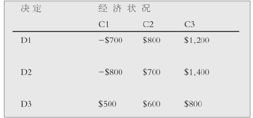

法哲学如果不对权利和正义这样的基本概念进行审视是难以想象的。权利——无论是法定的还是道德上的——贯穿法律和法律体系始终，因此是法学关注的核心概念之一。正义理念则既是国内法体系所宣扬的一种美德，也由于其对普世性的主张而追求超越法律本身。
个人和集体现在动辄主张他们享有对几乎任何事物的权利，并且很熟练地声称他们的权利受到了侵犯。政府和国际组织在保护和促进妇女权利、少数群体权利以及一般公民权利问题上承受了越来越大的压力。许多国家制定的权利法案都对法院施加了新的义务，要求他们承认那些或明或暗地得到保护的权利。
什么是权利？我所享有的得到法律承认的权利和我认为我应当享有的权利之间有没有区别？个人要求越来越多不同类型的人权会产生什么问题？当某些权利——比如劳动权利或者受教育的权利——的实现要求相当大的财政支出时，坚持这些权利是否合适？
虽然法律理论努力寻找答案来回答这样一些问题，但其主要任务还在于阐明权利的概念并逐渐构建出一些理论来证明或解释权利的本质以及如何协调各种互相冲突的权利。
有两种主要的权利理论。第一种被称为“意志”理论，主张当我有权做某事时，得到有效保护的是我做或者不做这件事的选择权。它强调的是我的自由和自我实现。第二种理论被称为“利益”理论，主张权利的目的是去保护我的某种利益，而非个人的选择权。它通常被认为更好地说明了享有某种权利意味着什么。
赞成后一种理论的人提出了反对“意志”理论的两点理由。首先，他们驳斥权利的本质就是有权免除他人的责任这种观点。他们认为，法律有时虽然没有消灭我的实体权利，但还是限制了我弃权的权利（比如，我不能同意谋杀或者通过订立契约转让某种权利）。其次，在实体权利和执行权利之间存在着区别。因而很显然小孩子没有放弃这些权利的能力或选择权，但他们认为如果因此说小孩子没有任何权利则是非常可笑的。
任何对权利的分析，出发点通常都是美国法学家韦斯利·霍菲尔德（1879-1918）作出的著名分析。他试图阐明，“X有权做R”这个命题可指如下四件事之一。首先，它可以指Y（或者任何其他人）有义务允许X去做R；这实际上就意味着X对Y有一种请求权 。他把这种请求权称为只是一种“权利”。其次，它可指X可以自由地做或不做某事；Y对X不负任何义务 。他把这个称为“特权”（尽管通常被描述为“自由”）。再次，它可指X有能力（power）去做R；X只是自由地去做某个行为，这个行为改变了法定的权利义务或者一般的法律关系（比如出售其财产），而不管他有没有请求权或者特权去这样做。霍菲尔德在此意义上称其为“能力”。最后，它可提示X不必遵从Y（或者任何人）的权力去改变自己的法律地位。他把这个称为“豁免权”。
霍菲尔德认为，这四种权利中的每一种都有“相反方”和“对应方”（如同一枚硬币的两面），如下面方框所示。
换言之，用霍菲尔德自己的例子来说，如果X享有某种指向Y的权利 ，即Y不得进入X的土地，则对应的 （也即相当于）是Y有义务 避开X的土地。特权 的相反方 是义务 ，其对应方 则是无权利 。因此，虽然X有权利 （或者请求权 ）要求Y不得进入他的土地，X自己则有进入土地的特权 ，或者换言之，X并没有义务避开。
霍菲尔德主张，请求权（即通常意义上的权利）是与义务严格对应 的。说X享有某种请求权就是说Y（或其他人）对X负有某种义务。但是说X享有某种自由并不等于 说任何人对他承担某种义务。因而，如果X有戴帽子的特权 （或自由），Y对X并不承担义务 ，而是没有权利 要求X不戴帽子。换句话说，自由的对应方是无权利。同样地，能力的对应方是责任（即对某人的法律关系被另一个人改变承担责任），豁免权的对应方是无能力（即无力改变另一个人的法律关系）。
这种分析非常有影响力，尽管它也有一定的局限性。霍菲尔德的所有四种权利（用现代的话语来说，通常被称为请求权、自由、能力和豁免权）都是指向某个或某些特定人 的权利。但如果说只要我承担某种义务，其他人就享有某种相应的权利，这看起来并不正确。反之亦然。如果你（或者其他人）不享有某种权利，我是否就真的不可能承担某种自己应该去履行的义务？例如，刑法对我施加了某种义务（比如说，要遵守道路交通规则），但我履行这些义务时，并没有特定人享有一种对应的权利。这是因为有可能存在着做某事的义务，但这种义务却不是对某个人 承担的。例如，警员有明确的义务告发罪犯，但他并不是特别针对某个人承担这种义务，因而，这也就不会使任何人产生权利。
即使人们对某个人 负有做某事的义务，这个人也不必然就享有任何对应的权利。例如，教师对其学生有一定的义务，但这并不必然赋予学生任何权利。同样，我们承认对婴儿或动物有某种义务，但许多人会主张这并不能得出婴儿或动物享有权利。相反，建立在对应性基础上的权利理论有一个好处，即某种权利，比如就业权的主张者必须确定谁有义务为他找到工作！
我们生活在权利时代。人权、动物权、道德和政治权利在公共辩论中起着主要作用。但除了以权利为基础的理论，一些道德和法律哲学家采取的理论要么是以义务为基础，要么是以目的为基础。三者的区别值得关注，这种区别可阐明如下：你反对酷刑，因为这会给受害者带来痛苦（这是以权利为基础），或者是因为酷刑贬损了施刑者的品质（以义务为基础），或者你可能认为酷刑只在影响了当事人以外的人的利益时才是不可接受的（以功利主义目的为基础）。
罗纳德·德沃金的法律理论立基于其权利命题之上（参见第三章）。权利是王牌。获得平等关注和尊重的权利对人的尊严和公平社会来说是最基本的。平等被赋予了优于自由的地位，平等权利理想在许多社会都有着重大的影响；关于这一点可以回想一下美国1950年代的民权运动以及南非种族隔离政策的瓦解。借助建立在相对简单的人类平等概念基础上的法律和道德论证的力量，宪法变革已经完成。
图9 非洲民族会议领导人纳尔逊·曼德拉在经过27年的监禁生涯后被释放。这是他被释后不久与本书作者在一起。作为一名训练有素的律师，曼德拉对推翻南非种族隔离制度所作出的贡献，使其成为与不正义作斗争的国际典范以及建立法律面前的自由平等制度的斗士。
人权概念在当代政治法律论争中占突出位置。收听或收看新闻或者展开一份报纸，人权问题无处不在。人权概念依赖于这样一种主张，即我们每个人作为人，不管种族、宗教、性别或者年龄如何，都享有一些基本的、不可剥夺的权利——仅仅是由于我们属于人类这个群体。这些权利是否得到法律承认并不重要，他们是否源自一种“更高”的自然法也同样无关紧要（参见第一章）。
联合国在纳粹大屠杀后通过的1948年《世界人权宣言》、1976年《公民权利和政治权利国际公约》和《经济、社会及文化权利国际公约》显示了国际社会对普遍人权观及人权保护所作的贡献。
图10 在美国，呼吁法律面前人人平等的运动是漫长而痛苦的。多种形式的种族偏见被付诸行动，在美国南部则产生了最暴力的形式：1889至1918年间，2，522个黑人被以私刑处死，其中包括50名妇女。
人权经历了三代。第一代人权大多是消极的公民和政治权利，由17、18世纪英国政治哲学家如霍布斯、洛克和密尔发展形成（参见第一章）。这些权利的消极性是指它们通常禁止干预权利持有者的自由。一个很好的例子是美国宪法第一修正案，它规定立法机构限制公民的言论自由是非法的。
第二代人权主要包括积极的经济、社会和文化权利，比如受教育权、获取食品或者医疗服务的权利。第三代人权主要是集体权利，这在《世界人权宣言》第二十八条已有所体现，该条宣布“人人有权享受本宣言所载权利与自由可得全部实现之社会及国际秩序”。这些“连带性”权利包括社会经济发展权利，分享地球空间、科技信息并从中受益的权利（这对第三世界国家尤为重要）以及享受健康环境、和平和人道主义灾难救济的权利。
人们通常将法律等同于正义。法院被叫做“正义的法院”（courts of justice），他们的建筑大楼上异常醒目地刻着这几个字或者饰有代表平等和公平的象征物。政府设立“正义”的部门（ministries of justice）来监督法律体系的运行。嫌疑犯不再是受到指控或者起诉，而是被“送交法院审理”（brought to justice）。但我们需要保持警惕，法律有时也会偏离正义。更糟糕的是，法律甚至可以成为不正义的帮凶，如纳粹德国或者种族隔离时期的南非法律。虽然在道德社会里，法律会追求正义，但把二者相提并论却是错误的。
任何情况下，正义都不是一个简单的概念。对正义主题的探讨大多从亚里士多德的主张开始。亚里士多德认为，同等情况同等对待、“不同情况”根据其不平等的比例区别对待就是正义。他还区分了“矫正”正义（矫正一方对另一方犯下的错误）和“分配”正义（试图根据每个人应得的程度给予其应得的一份）。在亚里士多德看来，分配正义是立法者主要关注的对象，但他没有告诉我们正义实际上是什么。
我们从罗马人那里得到了稍微清晰些的指点。《民法大全》是在罗马皇帝查士丁尼（482-565）的命令下编纂的民法典。其中正义被解释为“给予每个人其应得之物的永恒不变的意志”；“法律规则”被界定为“诚实地生活、不去伤害他人并给予每个人其应得之物”。这些表述尽管相当笼统，但确实至少包含了任何正义观都具备的三个重要共同特征：首先，它表明了个体的重要性；其次，它表明个人应当受到始终如一地无偏见对待；再次，个人应当受到平等对待。
作为正义的一个关键要素，不偏私的重要性经常以具体的形象得到描述。如正义和法律女神西弥斯，她总是一只手抓住一把剑，另一只手拿着一架天平。剑象征着占据司法职位者的权力；天平则象征着中立和不偏私，这正是正义得以实现的保证。在16世纪，艺术家们把她描绘成眼睛被蒙起来，以强调正义无视外物：正义拒绝任何压力或影响。
我们在寻求一个满意的正义概念时，平等看起来是有帮助的。同等情况同等对待、不同等情况区别对待的处理原则具有某种吸引力，但前提是我们能在用以区分个体的相关依据方面达成一致，这些依据在客观上应该可以被确定。其中一个依据也许是他们不同的需求。伊丽莎白富有，詹姆斯贫穷。一个公道的人会反对提供财富给詹姆斯而非伊丽莎白吗？也许有人会反对，如果詹姆斯贫穷是他自己肆意挥霍和铺张浪费造成的话。需求原则因而并非没有缺陷。
图11 通常所说的正义女神戴着眼罩，一只手拿着天平，一只手握着长剑。图中雕像矗立在伦敦中央刑事法院（老“贝利”）之上。
那么应得原则又如何呢？正义能否由个人的应得份额体现出来呢？人们经常说某个人得到了他“正好应得的”，表明由于多丽丝工作努力，所以她比鲍里斯晋升快是应当的。但鲍里斯可能缺少多丽丝那样的干劲，因为他还得养家糊口，身体上的疲惫妨碍了他对工作的投入。由于他对压抑的家庭困境缺乏完全控制能力，因此把正义建立在应得的基础上可能实际上会导致不正义！
个体之间的正义所存在的问题并不比来自社会正义的挑战更易于应对：后者面对的是如何建立起社会和政治制度来公平地分割蛋糕。对正义问题的现代论述倾向于关注社会如何能够最公平地分配社会生活的负担和利益。其中一种特别有影响力的理论是功利主义的正义理论，以及它的现代变体——法律的经济分析学说。本章以下内容将主要探讨这种研究正义的方法。之后，我将简述约翰·罗尔斯著名的“正义即公平”理论的主要内容。
根据功利主义者的观点，正义存在于幸福的最大化。最有名的是杰里米·边沁（我们已经在第二章中研究过他的实证主义理论）的主张，认为由于在日常生活中我们力求快乐、避免痛苦，所以我们也应当这样构建社会，以实现趋乐避苦：
因此，起决定作用的因素是我们行为的结果：这些行为使我们快乐还是悲伤？边沁认为，通过应用一种“幸福计算法”，我们可以检验任何行为或者规则的“幸福因子”。功利主义关注行为的结果，因此被描述为“结果主义”的一种形式；结果主义要与伦理学中的义务论体系区分开来，义务论认为行为的对错在逻辑上是独立于其结果的——“即使天塌下来也要伸张正义！”是义务论高呼的一个口号。
我们要注意到功利主义可分为“行为功利主义”（根据行为本身的结果好坏来判定行为的对错）和“规则功利主义”（根据规则的结果善恶来判定行为的对错，这条规则规定人人在相似的情况下都应当采取这个行动）。这一点区别非常重要。
一般而言，对功利主义的探讨主要关注“行为功利主义”，尽管法学理论家经常诉诸“理想的规则功利主义”，即根据某条规则的善恶来判定行为的对错，如果这条规则得到遵守 ，就会比遵循支配着同一行为的其他规则产生更好的结果。这种规则功利主义在一些情况下有着明显的优势，比如当法官要对是否应当判给原告损害赔偿金作出裁决时，显然他必须忽视其判决对特定被告所造成的结果。
现代功利论者倾向于把边沁那种快乐主义的行为功利主义模式看得非常古怪。约翰·斯图亚特·密尔的功利主义模式区分了高级和低级的快乐——意味着快乐是善的一个必要条件，但除了快乐与否外，善还取决于经验的品质。然而，密尔的功利主义模式在当时也没有多少人赞同，这也许是因为边沁和密尔似乎用他们自己的喜好来取代了他们认为人们应当有 的喜好。
因此，当代功利论者会探讨使人们在获得他们想要 的东西方面实现最大化；我们应当努力满足人们的喜好 。这样做的可取之处在于不强加任何不考虑个人选择的“善”的观念：你可以喜欢足球胜过福柯，或者喜欢摩城唱片公司的音乐胜过莫扎特。但这种态度也为其本身存在的问题所扰，具体见下文。
评估我们行为的结果
我困在一个荒岛上，和我一起的只有一个奄奄一息的人。这个人在他临死前委托我把10，000美元转交给他的女儿丽塔，如果我能设法回到美国。我答应了他。当我获救后，我找到了丽塔，发现她住在一幢大厦里；她已经嫁给了一个百万富翁。区区10，000美元对她现在的经济状况而言几乎没有任何意义。我是否应当转而把这笔钱捐给慈善机构？作为一个功利论者，我要考虑我行为的可能后果 。但后果是什么呢？我必须把违反允诺的后果和将这10，000美元捐给一家动物福利慈善机构的好处进行权衡。我坚守允诺会比违反允诺有更好的结果吗？如果我违反诺言，那么我也不大可能会遵守我许下的其他诺言，同时其他人也可能会被怂恿随随便便地对待遵守诺言问题。换句话说，我必须竭力去计算我的选择可能导致的所有后果。但是，一个非结果主义的康德主义者会声称我之所以应当把钱交给丽塔是因为我已经答应这么做了。指导我行为的应当是一个不容质疑的过去的事实：我的诺言，而非某些不确定的将来的结果。我也许会回答说，我的确考虑我许下诺言这个过去的事实——但仅在它对我把钱给慈善机构而非给丽塔这个行为的总后果 有影响的限度内考虑。我也许还会说，认为我有义务去遵守每一个 许下的诺言，这种主张是荒唐的。
功利主义用合意的可感知的人类幸福观取代道德直觉作为正义的衡量标准，这一点具有相当大的吸引力。但功利主义理论一直以来都遭到很多人的抵制，这些人认为它没能认识到“人的分化性”。他们认为功利主义只把人看成是手段而非本身就是目的，至少纯粹的功利主义是这么看。他们还声称，在功利主义者看来，孤立的个体仅仅在为人们找到价值提供途径或定位上具有重要性。
其次，功利主义的反对者还认为，功利主义的观点尽管平等对待个人，但事实上只是把个人看成都是没有价值的：他们的价值并不是作为人所具有的价值，而是作为快乐或者幸福的“体验者”所具有的价值。再次，批评家质疑为什么我们应当只把快乐或者幸福总量的增加看成是一个有价值的道德目标，并认为这与对幸福、福利等进行分配的所有问题无关。
对功利主义的第四种批评意见声称功利主义者所用的类比——理性个体为了以后的满足而审慎地牺牲当前的幸福——是错误的，因为这个类比把我的快乐看成可以被他人的更大快乐所取代。有人对功利主义所给出的最核心假定提出了批评：我们为什么应当试图满足人们的欲望？某些欲望，比如虐待动物，不值得去满足。我们的需要和欲望在任何场合下不都是受到广告的操纵？若如此，我们能否从我们“被控制的”偏好中分离出“真正的”偏好？还有，对功利主义者来说，试图说服个人喜欢德沃金胜过杜沃 [1] 音乐可以接受吗？若能接受，我们如何证明这样做是正当的？如果我们回答说是功利原则要求我们这样做的，这难道不是在暗示幸福计算法不仅包括我们现在想要的，而且还包括将来某一天我们在被说服或者接受再教育后决心想要的东西？
约翰·罗尔斯提出了一个不同的观点，他认为功利主义者是在用“善”来定义正当。这就意味着功利主义理论从“善”（如幸福）的观念开始，然后得出结论：只要能使“善”最大化，一个行为就是正当的。
我们是否任何时候都应当努力使福利最大化？有人认为公正地分配福利更重要。批评家批判的另外一点是很难计算人的行为后果：我们如何能事先知道我们计划去做的事情会导致什么样的结果？我们计算行为结果又（能）算到将来多久为止？
试图把我的快乐与你的痛苦进行比较显然存在着很多困难。同样，在一个较大的范围内，法官或立法者很少会觉得在两种或更多的做法中进行选择是件易事，也很少会觉得在多数人的幸福和少数人的不幸中作通情达理的平衡轻而易举。
和功利主义一样，支持对法律进行经济分析的人认为我们每天的理性选择应当成为社会公正的基础。这种理论主张，我们每个人都试图使自己欲望的满足最大化——如果这意味着要付出某种代价以实现这个目标，我们一般情况下也乐意这样做。换句话说，如果我非常想要一部法拉利，我就会乐于筹钱来购买。
这种现代形式的经济快乐主义的主要倡导者是法学家兼法官理查德·波斯纳（1939——）。虽然他否认自己赞成功利主义的立场，但波斯纳主张很多普通法似乎都可以解释为法官是在努力使经济福利最大化。换句话说，许多法律规则的建立都是着眼于在司法中努力实现最高效的结果，虽然人们经常没有意识到这一点。波斯纳认为，法官经常通过选择一个将会最大化社会财富的结果来裁决棘手的案件。波斯纳用“财富最大化”这个词所指的是这样一种情势，在这种情势下，善和其他资源都在最重视它们的人的控制之下；也就是说，这些人为了拥有这些资源愿意也能够付出 更多。
举个简单的例子，假定你以五美元的价格买到我这本书的复制本。你愿意支付的最高价格是十美元。这样你的财富就增加了五美元。同样地，波斯纳认为当社会上所有资源的分配能使每个人交易的总额都尽可能高时，社会财富就最大化了。波斯纳认为，这正是社会应当追求的。
波斯纳和他所属的所谓芝加哥学派认为，经济因素解释了若干法律规则的发展。例如，在有关过失的法律中，责任的确定通常取决于哪种方式最经济高效。普通法的方法是在从事互动行为的人之间分配责任，从而最大化行为的共同价值，或者说，最小化行为的共同成本。这一点的实现或通过重新定义财产权利，或通过设计一种新的归责准则，或通过对契约权利的认可。波斯纳照此方式分析了普通法的若干方面。
阅读波斯纳的长篇巨著确实要求对经济学理论有相当程度的了解。特别地，他使用了各种不同的效率概念，尤其是帕累托最优和卡尔多——希克斯检验。前者（根据意大利经济学家维尔弗雷多·帕累托命名）描述了一种状态，对这种状态的任何改变都会使至少一个人较改变前情况恶化。当获益者所得价值的增长超过失利者的损失时，这种变化就被称为卡尔多——希克斯效益。二者都是根据付出代价的乐意程度来衡量的。波斯纳还应用了“边际效用递减”的概念，此概念指出这样一个事实：把一美元给一个穷困的乞丐会对他的财产产生重大影响，而对一个百万富翁来说，是否给他一美元几乎没有任何影响。
著名的科斯定理（根据经济学家罗纳德·科斯命名）假定了一种情形，这种情形下，有一种结果是最“有效率”的。具体的例子可参见第68页方框中描述的情形。
然而，现实生活也许比这个简单的例子所说的要复杂得多。在此过程中，不可避免地要产生某些成本。科斯定理最直接的形式也许可以表述如下：当交易成本为零时，有效率的结果就会出现，而不管法律规定如何。
上面说的和正义有什么关系呢？它假设了财富的一种初始分配，这种分配可能完全不公平。“效率”是一种维持不平等现状的手段。换言之，法律的经济分析是否只不过是一种特定的增强资本主义自由市场体系的意识形态偏好呢？
也许更根本的问题是，财富的最大化真的等于正义吗？财富最大化是否真的是一种价值——自足价值或者工具价值，以致一个社会会认为牺牲正义也值得，这是令人怀疑的。许多人怀疑不断增长的社会财富是否真的会改善社会，或者指出我们的欲望比波斯纳所主张的要复杂得多。
约翰·罗尔斯（1921-2002）的《正义论》被广泛认为是一本绝世之作。该书详述了正义即公平的概念，并理所当然地 [2] 成为当代讨论正义问题所关注的焦点。
正义即公平的概念初看上去也许会让你感觉是老生常谈。然而，罗尔斯在拒绝将功利主义作为确定正义的一种方法时也就拒斥了不平等这个概念——即使不平等确保了福利的最大化。他认为，福利并不关乎利益，而是关乎“社会基本善”，包括自尊。罗尔斯尤其强调正义问题优先于幸福问题。换句话说，只有当我们认为某种幸福是正义的我们才能判断它是否有任何价值。在了解酷刑的实践本身是否正义之前，我们如何能知道汤姆从酷刑中得到的满足应不应当被认为有价值？换言之，功利主义用善来定义正当，而罗尔斯则认为正当优先于善。
一家工厂排放的废气弄脏了附近五户居民晾在户外的衣服。如果没有任何补救措施，每户居民就要遭受75美元的损失，加起来总共375美元。废气造成的损失可以通过两种方式来避免：或者在工厂的烟囱上安装过滤器，这个方案所需成本为150美元；或者给每户居民提供一个电动滚筒式干洗机，所需成本为每户50美元。比较高效的解决方案是安装过滤器，因为它只需花150美元就能消除总共375美元的损失，比买五台电动干洗机要便宜，因为五台干洗机需要花250美元。如果把享有清洁空气权赋予居民或者把排污权赋予工厂，结果是否会更高效？如果是前者，工厂有三种选择：排污并支付375美元的赔偿金、安装150美元的过滤器或者购买总价250美元的五台电动干洗机给居民。工厂自然会安装过滤器：这是最经济的解决方案。如果存在排污权，居民也有三种选择：忍受375美元的集体损失、花250美元买五台干洗机或者花150美元买过滤器给工厂。这样，居民也会选择买过滤器。因此不必考虑法律权利的分配就能实现一种高效的结果。
这种假设基于这样一种观点，即居民为与工厂磋商而集合起来不会蒙受损失。科斯把这种情况称为“零交易成本”。
该书第一章谈到了霍布斯、洛克和卢梭的社会契约理论。罗尔斯的正义即公平理论就是植根于这些永恒的理念。在《正义论》中，他的构思所展现的目标是要把社会契约上升到一个更抽象的水平。要做到这一点，罗尔斯认为，我们不应把原始契约看成是人们为进入某个社会或者建立某种形式的政府而达成的契约，而应认为原始协定的目标是关于社会基本结构的正义原则。这些原则是试图增进其自身利益的自由理性的人们会在平等的初始状态下认可的，它们将被视为明确规定了人们进行联合的基本条件。这些原则调整着所有更进一步的协定，并规定了社会合作的类型以及能被建立起来的政府的形式。罗尔斯把这种处理正义原则的方式称为正义即公平。
图12 约翰·罗尔斯的“正义即公平”理论产生了重要影响。
罗尔斯强调需要区分人们对正义的真实判断与他们主观、利己的直觉。对二者间不可避免的区别必须加以调整，调整的方式是重新审视我们自己的判断从而最终达到一种状态，在这种状态下，我们经过思考的直觉与我们深思熟虑的原则协调一致。这种状态就是“反思的平衡”。
罗尔斯提出了一种想象的图景：处在“原初状态”中的人们，在“无知之幕”的遮盖下讨论着正义诸原则。他们不知道彼此的性别、阶层、宗教信仰和社会地位。每个人都代表了某个社会阶层，但他们不知道自己是聪明还是愚蠢，是强还是弱，甚至不知道自己生活在哪个国家或时期。他们只对科学和心理学的准则有一定的初步了解。
在这种几乎全然不知情的状态下，他们被要求全体一致地选出一些一般原则，这些原则将规定他们作为一个社会整体生活于世的条件。在这个过程中，他们会受到理性自利的驱动：每个人都寻求那些可以给他或她（不过他们并不知道自己的性别！）最大的机会来实现其选择的良善生活之设想的原则。由于被隐去了个体特征，罗尔斯认为，原初状态中的人们会选择一种“最大化最小值”的原则，这个原则通过罗尔斯本人给出的损益表得到了说明（此处对该表作了轻微改动）。
我现在需要从一些可能发生的经济状况中进行选择。假设我选择D1，且C1发生了，那么我将损失700美元；但如果C2发生的话，我将获得800美元；如果我实在幸运碰上C3发生了，我将获得1，200美元。同样的情况也发生在D2和D3两种决定下。因此，获利的情况g要依赖个人的决定d和经济状况 c。 [3] 这样，g就是d和c的一个函数。或者，用数学公式来表示就是g=f（d，c）。
我将如何选择？“最大化最小值”原则要求我们应当选择D3。这时，我可能遭遇的最坏状况是获利500美元。这显然比另外两种选择下的最坏状况（此时我要损失800或700美元）要好。

在进行选择的过程中，原初状态中的人们作为理性的个体也将选择这样一些原则，这些原则确保当人们揭开无知之幕时，自己所处的最坏状况是所有可选择情形中最有利的。换句话说，我将选择的原则是，如果我恰好最终处在社会秩序的最底层时那些对我最有利的原则。类似地，罗尔斯认为，原初地位中的人们会选择如下两个原则：
［1］每个人都有权平等地享有一系列最广泛的基本自由，这种自由与其他所有人所享有的类似基本自由并不矛盾。
［2］我们应这样安排社会和经济上的不平等，使得这种不平等：
（a）对最弱势的群体最有利，并符合正义的储存原则，而且：
（b）这种不平等隶属于公平机会平等条件下，公职和职位对所有人开放。
第一条原则较第二条有着一种罗尔斯所说的“词典序列上的优先”。换句话说，原初状态中的人们把自由置于平等之前。何故？由于上述“最大化最小值”策略，没有人愿意冒险拿自己的自由作赌注——如果揭开无知面纱，他们发现自己就是社会最倒霉人群中的一员呢！
同样，人人都会选择第二条原则中的（a）款，即所谓的“差别原则”。这确保任何人可能遭遇的最坏结果便是“最弱势”，而且如果他们确实最终成为这群人中的一员时，他们将从该条款中受益。由于存在着处境更糟或者改善处境的机会减少的风险，选择这个原则而非绝对平等或者某种形式的更大不平等是完全理性的。在一个把自由置于平等之上的社会，人们将能更好地改变其命运。为什么呢？因为各种不同的“社会基本善”（罗尔斯认为包括权利、自由、权力、机会、收入、财富，尤其包括自尊）更有可能在一个保护自由的社会获得。
罗尔斯认为，原初状态中的人们将选择差别原则，因为如果他们最终被发现属于弱势的人群，该原则的两个主要竞争者（“天赋自由体系”和“机会公平平等”观念）都无法给他们提供一个幸福的前景。前者对应的是一个未受控制的、对财富分配漠不关心的自由市场经济。罗尔斯认为，原初状态中的人们将抛弃这个原则，因为这个原则“允许份额的分配受到……一些从道德的观点来看是非常任意的因素不适当地影响”。人们将把碰巧生在一个富裕的家庭看成是与道德无关的事情。
人们也会摒弃第二种安排，即使它明显地比第一种更为可取。虽然它肯定天赋才能及其应用，但这个体系也存在着一个类似的不足：它把道德与个人才能联系起来，而这种联系和成为一个百万富翁的后代相比，也同样是很偶然的因素。无论是哪一种情况，出身的偶然性与应得都没有任何联系。但是，如果人们选择了差别原则，该原则就会保证有才能的个人可以增加其财富，只要在这个过程中他们也同样增加了最弱势群体的财富。
注意，罗尔斯的第二个原则包含两点重要限制以确保最弱势群体的利益。首先，他提出了“正义的储存原则”要求原初状态中的人们扪心自问，假设所有其他世代的人们愿意以相同的比率储存，则他们在社会的每个发展阶段上愿意储存多少。记住一点，他们对其所处的社会已经达到何种程度的文明并无丝毫概念。因此他们会为了后代人的利益而储存一些他们自己的资源。第二个限制指向这样一个事实，即工作机会应当向每个人开放。
罗尔斯的研究计划雄心勃勃，虽然他获得了无数赞赏并引发了大量研究文献，评论家们还是对其理论的若干内容表示了意料之中的保留意见。比如，有人反对社会善的任何固定模式的分配这种观念。其他人则抨击“原初状态”虚假（是否真的可以完全隐去人们的价值标准？）或者必然会产生罗尔斯假定的结果：为什么人们应当更青睐自由而非平等？
为回应这些批评，罗尔斯在1993年出版的另一本书《政治自由主义》中提炼并修正了他最初的一些观点。我在这里无法分析这种种批判性争论，但是在这本后期著作中罗尔斯澄清了一个重要的误解。他解释道，“正义即公平”并不试图规定社会正义的一种通用标准。他的理论是实践型的，与现代宪政民主政治息息相关。换句话说，他的理论是一种政治和实践上的——而非形而上学的——正义观，是一种在哲学上中立的、超越哲学论争的理论。
为追寻他所说的“重叠共识”，罗尔斯假定其正义诸原则是一个有着相互冲突的利益和价值标准的多元、民主社群中的成员可达成政治共识的条件。其政治自由主义概念承认，这种共识可能会受到一个国家所确立起来的共同的道德或宗教信条的挑战，但是，社群的正义感将压倒国家对公共善的解释。